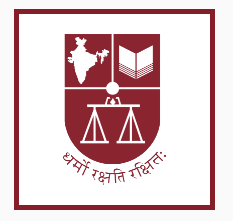

OpenNyAI एक सामूहिक प्रयास है, जो एआई और समुदाय की ताकत से बदल रहा है कि 1.4 अरब भारतीय कानून और न्याय को कैसे अनुभव करते हैं।
अभी सक्रिय
द बिग बेल बैश 1,20,000 लोग जेल में हैं जिन्हें कानूनन रिहा होने का हक़ है। हम वे कागज़ात दाखिल करते हैं जो उन्हें बाहर निकालते हैं। मज़दूरी जो कानून पहले से देता है मज़दूरों को वह वेतन मिलना चाहिए जिसकी कानून गारंटी देता है। हम उस हक़ को उनके हाथ में पैसे में बदलते हैं। बच्चियों के लिए सुरक्षित इंटरनेट ऑनलाइन नुकसान झेल रहीं बच्चियों के लिए, हम ऐसी मदद और सुरक्षा बनाते हैं जो सचमुच उन तक पहुँचे।यह कैसे काम करता है, एक जीवंत उदाहरण से समझिए: द बिग बेल बैश। इसे स्क्रॉल करके देखिए।
पूरे भारत में लगभग 1,20,000 विचाराधीन कैदी BNSS की धारा 479 के तहत कानूनन रिहाई के हक़दार हैं, फिर भी वे जेल में हैं क्योंकि किसी ने कागज़ात दाखिल नहीं किए।
हम वहाँ से शुरू करते हैं जहाँ अभी काम हो सके: मध्य प्रदेश। हम उन लोगों को ढूँढते हैं जो पहले से पात्र हैं, और उन वकीलों को जो उनके लिए आवेदन दाखिल कर सकें।
टेम्पलेट किए गए ज़मानत आवेदन, नि:शुल्क वकील और मामलों की सीधी ट्रैकिंग पात्रता को रिहाई में बदलते हैं, एक-एक व्यक्ति।
कानून हमारे सोचने से ज़्यादा बार लोगों के पक्ष में होता है। एआई अब सेकंडों में वह कर सकता है जिसमें पहले महीनों लगते थे। और एक समुदाय काम करने को तैयार है। पहली बार सारे टुकड़े एक साथ आ रहे हैं, इसलिए हम उनका उपयोग सालों से अटकी समस्याओं को सुलझाने में करते हैं। OpenNyAI, Agami का एक मिशन है, जिसे 2,000+ संगठनों के 4,000+ बदलावकर्ताओं के आंदोलन का समर्थन प्राप्त है।
समुदाय
वकील, विधि छात्र, पैरालीगल, तकनीकविद्, शोधकर्ता और नागरिक-समाज संगठन।
एआई
हम एआई का उपयोग वहाँ करते हैं जहाँ यह मानव प्रयास को कई गुना बढ़ाता है: आवेदनों के टेम्पलेट बनाना, मामलों पर नज़र रखना, और उन लोगों को ढूँढना जो इंतज़ार कर रहे हैं।
सार्वजनिक संसाधन
उपकरण, डेटासेट, व्याख्याएँ और साझा सीख, जिन्हें दूसरे अपना सकते हैं, सुधार सकते हैं और आगे बढ़ा सकते हैं, मुफ़्त और ओपन सोर्स।
OpenNyAI का असर व्यावहारिक सार्वजनिक संसाधनों में बसता है: मॉडल, उपकरण और साझा ज्ञान, जिन्हें न्याय के बदलावकर्ता उपयोग कर सकते हैं, अपना सकते हैं और बेहतर बना सकते हैं।
एक ओपन मॉडल जो भारतीय कानूनी दस्तावेज़ों को पढ़ता है और लोगों, अदालतों, तारीख़ों तथा क़ानूनों को चिह्नित करता है। पूरे इकोसिस्टम में 10,000 से ज़्यादा बार डाउनलोड किया गया।
एक ओपन-सोर्स संवादी एआई स्टैक जो किसी भी भारतीय भाषा में, व्हाट्सएप पर कानूनी और कल्याण से जुड़े सवालों के जवाब देता है। OpenNyAI समुदाय द्वारा बनाया गया और माइक्रोसॉफ्ट बिल्ड में सत्या नडेला द्वारा प्रस्तुत।
एक समुदाय-निर्मित मानक कि नागरिक के सामाजिक-कानूनी सवाल का बेहतरीन जवाब कैसा हो, जिसे भारत भर के 100+ पैरालीगल और अग्रिम पंक्ति के कार्यकर्ताओं ने आकार दिया।
OpenNyAI के एक जीवंत स्प्रिंट में शामिल हों, वकील, तकनीकविद् या शोधकर्ता के रूप में, या बस किसी ऐसे व्यक्ति के रूप में जो किसी असली न्याय समस्या को सुलझाने की मेहनत करना चाहता है।
